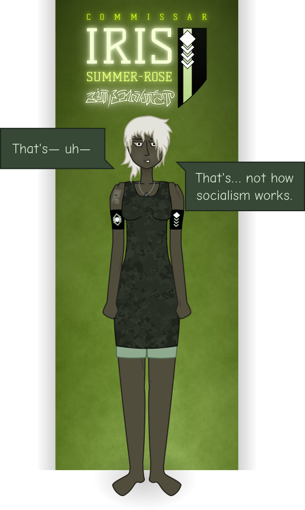

“You meant to keep me from the Council.”
Dove stops in the middle of the passageway. She takes a deep breath.
“Are we really going to do this right now?” she asks, turning to face Peregrine, who’s standing behind her, hands clapsed behind her back, still clothed only in her underwear.
“Why?” Peregrine demands. “Why didn’t you send for me?”
Dove sighs. “Because I was afraid you’d do exactly what you did.”
“You wanted to leave me with a way out. A way to pretend I wasn’t part of this.”
“Yes! Yes, I did, and now— if we— if the Commonwealth—”
“If we lose,” Peregrine interrupts, “then we’ll die together.”
“I don’t want you to die!”
“And I don’t want to live in a world without you.” Peregrine grabs Dove by the front of her top. She steps closer, until their eyes are only inches away, staring up at the taller woman with pleading but determined eyes. “I will not unbind my fate from yours, my love. Not after what we’ve been through together. How dare you expect that of me?”
Dove clutches her forehead with one hand and rests the other against Peregrine’s neck, brushing her jaw gently with a thumb. “God damn it, Peri, I just want to keep you safe—”
“And I, you!” Peregrine cries out, taking Dove’s cheeks in her hands. “We protect each other, Dove; you don’t get to coddle me! You don’t get to shoulder my burdens and take my sins upon your name unless you allow me so in turn.” She shakes her head in frustration. “You’ve been a mother so long you’ve forgotten how to be a lover. All you’ve been doing for decades is protecting people, putting everything on the line for the ones you cared about—”
“Wouldn’t you?” Tears are dripping from Dove’s eyes again; she wipes them away with a violent motion. “Can you blame me for—”
“I am not blaming you!” Peregrine takes a deep breath, closes her eyes for a moment, lowers her voice. “I’m not blaming you,” she repeats, more quietly, her register coarsening measurably. “Of course I’d do exactly the same thing. You’re a good, caring, special woman, Dove, that’s why I fucking love you. But—” She rests her forehead on Dove’s chest. “Do you remember? That first night you called me to you chambers and finally let it all out? Finally let yourself be vulnerable? Finally cried in my arms instead of just holding it all down inside where people could barely see it?”
“Of course I do—”
“Then hold onto that moment.” Peregrine looks back up at her, and now there are tears in her eyes too. “Remember that I am here for you. Remember that love is a two-way street, and you can’t just give, give, give and refuse to take anything in return. I love you, I adore you for everything you’ve done for me, for all the burdens you’ve lifted off my shoulders, for the companionship and the family you’ve given me, but you are due no less in turn.” She loosens her frantic grip on her lover as she steps even closer, running her hands gently down the other woman’s body until they come to rest on either side of her sternum. “Better to fall defending you, better we perish as one, than to be sent away from you in your hour of need, live a life of peace and safety, and never see you again, knowing all the while you died alone in agony,” she whispers, her cheeks now streaked with rivulets of tears. “Don’t deny me my honor. Please. I will get down on my knees and beg before all the realm if that’s what it takes for you to treat me as your partner, not as just— just another treasure to defend—”
“…I’m sorry.” Dove pulls Peregrine close, kisses her tenderly on the lips, rests her forehead against hers. “I— I’ll try. I’m sorry I’m so bad at this.”
Peregrine shakes her head, wiping away the tears. “Don’t apologize for loving me. I know you, Dove. I know who you are, your scars and your fears and all your damage. So I know why you do the things you do.” She kisses Dove softly on the lower lip. “Don’t apologize for being you.”
They stand there for a moment, Dove’s arms wrapped tight around Peregrine’s bare back, her head resting in the crook of Dove’s shoulder. Peregrine’s hard breathing begins to slow, as their heartbeats pound in each other’s ears.
“You must be freezing,” Dove says finally, breaking the silence.
Peregrine nods, laughing shakily.
“Let’s go get you something to wea—” Dove begins, and stops abruptly, turning to look as she hears a door bang shut to her right. Iris is standing there, back against the door, arms hanging loosely at her sides, staring vacantly at the carpet. Dove clears her throat.
“Is… is all well, Mistress Iris?”
“Comrade Iris,” Peregrine corrects her, adding quietly, “Oh, look; that’s another reason you don’t get to mother me anymore — comrade.”
“N-no,” says Iris, distantly. “Not really. I’m—” She lifts her head, taking a deep breath, fixing her eyes on Dove. “I’m still trying to— to process everything that just happened in there.”
Dove glances at Peregrine. “I don’t understand.”
Iris purses her lips, clasps her hands behind her back. “Let me put it… put it this way,” she says, joining the two at the great stained-glass window. Kiteroost stretches out below them, mountains giving way to plains and plains to the dull orange glow of the sinking sun beyond the horizon. She gazes out, flinching as she sights the tiny, distant figure of a Guardswoman out on the street. “You, the great Lady Lunarch Dove Blackthorn,” she continues: “peer of the realm, heiress to and and absolute ruler of the entire Blackthorn lunarchy—”
“You can just say ‘profligate,’ you know,” Peregrine interrupts, taking a tidily folded gown from the arms of a quick-witted slave, whom she favors with a smile. “We know it’s what you mean.”
“Profligate bourgeois parasite, then,” Iris replies, her gaze fixed on Dove’s face, searching for a reaction, finding none. “You, Comrade Lunarch, just played a room full of gentry like a pai çiņ—”
“Really, ‘comrade’ is fine.” Dove smiles. “We did all just cast off our titles.”
“—and got them all to pledge themselves to the socialist cause.” Iris clears her throat. “Do you understand why I am having a hard time believing my own eyes right now?”
Dove and Peregrine look at each other. The erstwhile justiciar is idly buttoning up her gown as if it’s the most ordinary thing in the world to be doing in a busy palace hall.
“Not really?” Dove replies.
“This… this is the opposite of how this goes,” Iris replies, her voice now slightly manic. “How it was supposed to go. I don’t mind telling you at this point, I’ve been spending half my nights trawling taverns looking for volatile malcontents, or in the Khmai Quarter handing out pamphlets, trying my damnedest to foment revolution against your rule, and you know what?” She takes a deep breath. “No one’s interested! Nobody but a drunken teenager here and there. Even the slaves don’t want to overthrow your tyrannical reign, and instead I just watched the top Blood in the lunarchy swear a fucking Zyahua blood oath — in Khata’e’s sight for some reason — to overthrow themselves! What— what the fuck is this city?” She lets out a shaky laugh. “Ja’ekhna ikotta’evai Mitikhe, I feel like any second now the General’s going to step around the corner and tell me this was all some… wacky practical joke.”
“Do you know what the average income of a vassal House is in this lunarchy, mistress?”
Swift is standing at the door. Her eyes and nose still red from crying, and as the three women turn to look at her, her gaze drops and she flinches.
“I— Milady Swift? What are you—”
“I wanted to say thank you.” Swift hesitantly approaches the trio, stands awkwardly before Iris. She clasps her wrist below her waist, her legs pressed tight together. Her blue and white hat hangs loosely from her fingers, and she fiddles nervously with the brim. Even though she’s instantly recognizable as a pureblood, the young woman is still so short that her eyes and the Khmai woman’s are at just about the same height. “It was— nobody’s ever tried to comfort me like that before. Not even my own mother. Normally they just… yell at me or laugh.” She looks down again. “So, um. Thank you. You are a very kind woman.”
“I… y-you’re welcome?” Iris glances at Dove. “Aren’t— aren’t people afraid to treat a peer so poorly? I’ve seen people flogged just for looking at a highborn the wrong way.”
“The common folk, certainly,” Dove replies. “Her family, less so.”
“I tried to have her aunt flogged once,” Peregrine says with a sigh. “The old hag would beat on poor Swift every time she came to town. Asserted the Privilege, of course, and when a Jury convened they threw out the sentence I passed. Bleakfrost was the only one who bothered to turn up to back me, bless the woman. Gave quite the speech too, as I recall, not that it made the slightest difference. But do you know the worst thing?” Peregrine leans back against the window. “When the call went out that the Lady Vassal was on trial, one of the peers who came to sit on the jury was her sister. Swift’s mother. And she voted for immunity.”
Iris stares at Swift, who nods, looking away. She turns her gaze to Dove. “She— why didn’t you do anything about this?”
“I didn’t know,” Dove says simply. “It was years before Peri and I were… well. Working so closely together, and Owl never said a word about it, not all those years she sat on my council. When I found out I banned Egret from the city, of course, but by then the damage was done. All it really accomplished was getting myself on the Nightspark shit list.”
“That’s the thing about the Blood.” Peregrine folds her arms, gazing levelly at Iris. “People like you, all you ever see is the glittering palaces, the carriages, the glamorous robes. The shining trains and the galvanic carriages. You see the lavish lifestyles they live, and how dreadfully they treat the common folk, but you never see the horrible things they do to one another.” Shivering, she snuggles up to Dove, who wraps her arms around her waist. “But I did. Being a justiciar means you see the worst everyone has to offer, Blood most of all.”
Iris looks back at Swift. “Sainted Mother! Swift, I’m— I’m sorry.”
Swift offers her a fragile smile. “I thought this was going to be my life forever. That I’d be… penned in with all the people who hurt me forever. But you…” She steps forward, reaches out to grasp Iris’ hand. Her eyes are full of fear, but also eagerness and hope. “Is it really true what you said? That there’s no Blood Privilege in the Commonwealth? That things are better?”
“In the Commonwealth, nobody would ever be allowed to do what’s been done to you, Comrade Swift,” Iris replies, looking her in the eye and squeezing her hand tightly.
Swift falls to her knees and kisses Iris on the palm.
“Thank you,” she whispers. “Thank you, Comrade Iris.”
Iris can’t help but smile.
“My goodness, you’ve only been here half a year and already you’ve two highborn girls eager to be your brides,” Dove remarks, completely deadpan.
Iris flushes hotly. Swift stammers.
“Such a shame they’ve no marriage alliances in the Commonwealth,” Dove continues. “You’d have two entire Houses in the palm of your hand. All the same, I’m sure my niece would be delighted to officiate the weddings; she is a wise priestess and strong in the spirit.”
“Aha— ah, uh— wh-what were you, um, saying before?” Iris manages to ask Swift, flailing to change the subject. “Something about — about average incomes?”
“Oh, yes.” Swift clambers to her feet, Iris helping her back up. “It’s not like the Traverse out here. Our Houses are small. The population is small too. It’s hard to bring in more than one or two hundred platinum a year. After— after tithes to the Empress, and tithes to the Lunarch, and food and rent and salaries paid, it’s… not very much.”
“Owl was over a thousand in debt,” Dove adds. “Tithes have only been rising since the War began, and high. I paid out nearly half of my budget this year to the Imperial Treasury. The Court is bleeding us dry, forcing us into debt so the House Imperial can preserve its own solvency.”
“Thank you again, milady, for—” Swift begins
“‘Comrade,’” Dove corrects her gently. Swift flashes her an embarassed smile. “I’m not your Lunarch anymore.”
“Then thank you again, comrade, for paying off the Nightspark debt.”
“It was the least I could do after everything I let happen to you, dear,” Dove replies. “The last thing you need is a horde of Saravanese coming for your scalp.”
“Does this make it easier to understand?” Peregrine quietly asks Iris. “Why we’d turn on our fellow ‘profligates,’ give up our titles, our land, our power?”
Iris gazes at her for a moment. “You just want to be safe.”
Dove nods. “From the Empress and her pet thugs, most certainly. But from each other as well. From the cutthroat world we struggle to survive in. This epidemic of violence and rape, it didn’t turn our loyalties around overnight.”
“It was just the last straw.”
Peregrine nods silently.
Iris takes a deep breath.
“Thank you,” she says. “This is… a lot to take in. But I think I… I think I understand some things better now.” She stops, turns at the sound of footsteps.
“Milady Dove!” The master of the palace guard claps his fist to his heart in salute as he approaches, trailed by two armed women. All three are bruised and battered; the Colonel himself has a black eye. “Forgive me my tardiness, I was told you were in council and not to be disturbed—”
“We were,” Dove assures him. “What news, Colonel?”
Sunderbrook glances about uncertainly. “Largely excellent in nature, but it concerns certain sensitive operations—”
“Indeed.” Dove turns to Swift. “I do not know if you are one to rejoice in vengeance, my dear, but given your recent suffering, it may bring you some comfort to accompany us in this. Will you?”
Swift looks to the Colonel and back, and nods. Young though she is, she’s familiar enough with court intrigue not to ask questions.
The little troupe passes into a part of the palace restricted to House personnel, guards saluting as Dove passes. The freshly minted comrades follow the Colonel to a wide ascender-shaft, which he opens with his own key before ushering them inside the waiting capsule.
“Might I loosen my tongue, your Serenity?” Sunderbrook asks quietly, as one of the riflewomen pulls the door shut.
“As if we were alone in my office, Colonel. —And please, there’s no need to call me such things.”
The Colonel frowns. “Milady?”
“I have cast off all vestments of the Empire and renounced my title,” Dove answers. “The Privy Council has come to an agreement, and the Vassal Houses have joined with House Blackthorn. You will be briefed on the full details before long, I am sure.”
The Colonel whistles. “You’ve been a busy girl today, hain’t you, milady?”
“Indeed she has,” says Peregrine, the corner of her mouth rising.
“Indeed we have,” says Dove reprovingly, putting an arm around her waist.
“Be that as it may.” The Colonel waves a hand dismissively. “Last I checked, I don’t serve the Privy Council, I don’t serve Kiteroost, and I sure as ash don’t serve any God-forsaken Empress. I serve House Blackthorn, and ’less I am most severely mistaken, you’re still mistress of this fine House. So I’ll call you howsoever I damn well will, your Serenity.”
Dove laughs ruefully. “I suppose I know you well enough not to press the matter, Marten. So what news?”
Sunderbrook smirks. “Little Miss High & Mighty is took but good.”
“Alive?”
“Spitting, biting, and howling like a stuck pien şai,” the Colonel confirms. “She was fool enough to take the ascender to the ground floor. That made it easy on us. We cut the galvanics between floors, lobbed some smoke grenades down the access hatch, and dropped in with gas masks before she even knew what was happening.” He shakes his head. “I don’t rightly know what kind of fell sorcerous brews they must feed those she-devils on Carnelian. It still took damn near twenty of us to subdue her — half a minute breathing in that smoke and I’d be drooling on the floor, I don’t mind telling you, but ten minutes on and she was still putting up a fight. But God be praised it made her weak enough to get her down in chains.”
“What of the wounded?”
“We was blessed as no one fell outright. Three crippled, I fear; the rest got off with a few broken bones here and about.”
Dove clasps her hands. “Colonel, I am as ever humbled by your bravery and dedication, and that of your soldiers. You have accomplished something today truly scarce among our nation’s deeds. You have my heartfelt thanks and congratulations, and my solemn oath on the Blood of the Sisters that those crippled for the sake of their honor need never again fear for their future, nor their families. You are heroes, all of you.”
Sunderbrook grins, fiddling with the control panel; the capsule shudders and begins to drop. "Hain’t could done it without my boys. I’ll admit, I was something skeptical when you wanted to open combat roles to men — figured we’d end up getting a bunch of bright-eyed young lads thrown to the pyre for naught. But now? Dú shan dám, I’d keep them on the force even if they couldn’t carry at all — there’s no woman they couldn’t take in close quarters.” His grin broadens. “So it would seem, not even those thrice-foul fatherfuckers of the Guard’s. I was a fool to doubt you.”
“Ah, yes; about that.” Dove smiles. “We can thankfully dispense with the legal chicanery. Remove all the restrictions on male use of weapons and revise your combat doctrine; it’s time to worry about being effective, not convincing blackrobes that your boys only draw to protect women."
“I do beg your most precious pardon?”
“There is a consensus among the Privy Council that the customary proscription against men bearing arms is… an artifact of a bygone age. We have yet to formalize the new code of law, but once this is done, those archaic edicts shall no more trouble you in your duty.”
“…I’ll be baked and basted. I never half reckoned I’d see the day.” The Colonel sounds genuinely taken aback. “Now that is going to make a lot of people most terrible mad.”
“They’ll pipe down once they see your men helping to drive the Guard from our city.”
“P-please, if milady might pardon my ill-mannered interruption,” Swift stammers, staring at Dove, who nods assent. “Do I— do I apprehend rightly, that you have… already captured a soldier of the Imperial Guard?”
“One Condor Stillglade, the horrid honorless harridan responsible for permitting this entire Godbedamned clusterfuck of a situation,” answers the Colonel, “and what’s worse, disrespecting the Lady Dove which I for one can not abide.”
Swift’s eyes widen. “Oh. O-oh my goodness! You mean—”
“Yeees.” Sunderbrook preens. “The very Dame-Colonel herself.”
“You’ve found a means to secure the prisoner?” Peregrine murmurs, eyes fixed on the ascender’s intricately carved floor dial, which is slowly rotating clockwise.
Sunderbrook laughs. “We had to break out one of Granny Blackthorn’s old toys, but aye, Guardsblood or no, she’ll be sitting tight and pretty until our Lady here says otherwise.”
At the mention of her grandmother, Dove squeezes her eyes shut and pinches the bridge of her nose. “The woman’s mark is indelible, no matter how hard I scrub.”
“She was a right proper terror, your gran,” says Sunderbrook approvingly. “Well, I was but a wee adjutant in them days. I did meet her in the flesh on one blessed occasion.”
“And you survived?” asks Dove skeptically.
“She took but one look at me, tilted her head damn near sideways, and said, ‘boy, there’s ghosts in your head and I don’t like the way they looks at me.’” He smiles wistfully. “I hain’t never could tell when she was serious and when she was fooling. Ah, but them ravens of hers. They was deadsome serious every time.” He taps his nose. “I still have the scar.”
“It took nearly a decade to flush the last of those hateful mutants out of the palace,” Dove comments to Iris. “Too many God-forsaken nooks and crannies. I found an egg in a closet a fortnight ago and nearly screamed.”
“The place just ain’t the same without the old birds. You’d sneak to the pantries late at night for a quick nip of mead, when all of a sudden they’re shrilling in the rafters and you’re running in terror like old Granny herself is going to be right around the corner, swordstick and all, just like old times—”
“Those creatures were a menace, Marten.”
“Weren’t they just! Ah, but it gave the old place character.”
“The stained glasses give the palace character,” says Dove sternly. “Did you know, half of them are old Queenfisher Stormbrow pieces, from before she was renowned? That is a tale my family can be proud to tell, of a great artist we were first to patronize. Our poor innocent guests being terrorized by devil-birds the size of a suckling pien şai, less so.”
“Respectfully, milady, I’m bored to sleep already.”
The ascender capsule shudders as it comes to a halt, and they venture out into the dank air of the palace dungeons. The Colonel takes a torch from a sconce as he leads the way through the ancient stone halls, touching it to a dimly glowing brazier to set its coals aflame. They stop outside a heavily guarded cell, and the Colonel exchanges a few terse words with the soldiers on duty. The guards unbar the door and usher the group inside.
Sunderbrook hefts his torch and mounts it in an empty sconce, casting the dark room in low firelight and harsh, flickering shadows. Four soldiers walk past, smoothly taking up stations around the prisoner, drawing their swords and holding them at the ready. Dove, heart pounding, steps forward.
It’s almost hard to believe this is the same woman who threatened her with death in her own sanctum just hours hither. Condor is kneeling, chained hand and foot to an unforgiving iron frame, heavy wrought-iron bars spreading her knees, ankles, and elbows far apart, her every manacled limb fixed firmly in place. Sturdy ropes bind her thighs and powerfully muscled upper arms to the frame for good measure. The guardswoman is shorn of her magnificent robes, revealing an oddly boyish body splashed all about with bruises, blood, and lacerations. The angle of one of her legs seems to suggest it’s broken.
“Good afternoon, Dame-Colonel,” says Dove mildly. “I trust you find your accomodations to your liking?”
“So you were complicit in this.” Condor looks up, and Dove swallows hard. The expression on the Dame-Colonel’s face tells her in no uncertain terms that the heavy restraints are the one and only reason anyone in this room is still breathing.
“Merely complicit? Give me a bit more credit than that.”
“I cannot fathom what you dream you will achieve by this abominated blasphemy,” Condor says slowly. “Fie. Each time I think I have experienced the absolute, rank nadir of your caste’s insanity, stupidity, and depravity, the Blood takes it upon itself to surprise me once more. I would not have thought you capable of such a heinous thing, ‘your Serenity.’”
Dove clasps her hands behind her back. “I have renounced that title, Dame.”
Condor lets loose a manic laugh. “Renounced? Renounce your own blood, would you? Renounce also perhaps the grandeur of the mountains high or the damp of the morning dew! This you are equally powerless to unmake. It matters little now, in any case — no jury in this galaxy will hesitate one moment to put you to the flame for your unspeakable crimes.”
“My God, they just never shuts up, does they?” asks Sunderbrook, whistling. He turns to Dove. “Would you believe, she was prating on like this the whole entire time we was delivering her a righteous beatdown?”
“I would not doubt it one moment,” answers Dove.
“It’s like she swallowed a dictionary and it gave her the wind.”
Condor deigns to glare momentarily at the Colonel before returning her steely gaze to Dove. “Perhaps you play at hostage-taker, imagining the Right Hand of the Empress a feeble mercenary legion to be cowed by such base and criminal antics. If so, know that you will buy nothing with my flesh but your own damnation, for that is the unchanging price of laying hands upon her Radiance’s own. The Guard makes no parley with heretics, and I will go gladly to the Celestial Queendom knowing that a bitter death awaits you all.”
“You gravely overestimate your importance if you fancy yourself a hostage,” says Dove flatly.
“Insolent weasel. I offer you this, O Lady Lunarch: heed me well, for any parley with a heretic is a boon undeserved, and should you scorn it there will come none further. You will release me immediately and throw yourself upon the mercy of the Guard, and in turn I shall beseech her Radiance that your children might live on as landless paupers. If your defiance persist, they will join the rest of your accursed House on the pyre. You will die in anguish and agony with the piteous screams of your daughter — Falcon, wasn’t it? — ringing in your ears all the while, and the Blackthorn name will be vanished whole from the annals of histo—”
“Enough,” growls a soldier, taking a step towards Condor. There’s an ornate brass and bronze rod in her bloodied hand, a prod intended for the encouragement of livestock. It lets off an evil galvanic crackle as her finger closes against the contact, sparks snapping between the two sharp spikes at the business end. “Long past time you was learnt some manners, you sick freak of nature—”
“Peace.” Dove holds up a hand; the soldier’s face falls in disappointment and she steps back, lowering the prod. “Your venom and ire will buy you naught, Dame-Colonel. You have naught with which to negotiate, even could you be trusted to honor your word; at this point, I would not trust you to uphold even a sacred blood oath, for you are a scoundrel and a barbarian, as are the rest of your kind, knowing nothing of honor or duty. If you imagine I come before you to wheedle and ply you for concessions or treaties, I fear I must disappoint. My sole purpose is that you see what your actions and your arrogance have wrought; thereafter I shall depart, and leave you to your peace.”
“You… are delusional.” Condor shakes her head. “You capture one officer through the blackest of treachery and deceit, and this does so embolden you to think you may challenge the Imperial Guard in open battle? Your reign is at its end, and your forces face only the slaughter have they not the sense to surrender. Such your actions have wrought, O Lunarch.”
“I do not doubt it would be so,” Dove returns evenly, “but for one troublesome detail. You see, Dame-Colonel, between the rapine, bloodshed, and sheer libidinous constupration your wicked troops have rained upon my city, the uncaring silence of your mistress at the Capital, and the scorn even of she who names herself Empress, you of the Empire’s party have proven plain that I was grievously ill-reasoned to reckon the nature of this war as once I did. Taken in like a common mark by slander and malign deceit. In a way, I suppose I owe you some gratitude in this, Dame Condor: for you at last have cleared my eyes, and lain bare the name and nature of the true Adversary in this war of wars.”
Condor blinks several times, then she takes a sharp breath. “You— you cannot possibly mean—” she begins, and Iris chooses that moment to step out of the shadows. Condor’s eyes open wide and she explodes into a storm of spluttering profanity, her veins and muscles bulging madly as she renews her struggle to break free of her restraints. “Fie, fie on thee! Treason, treachery, heresy, blasphemy! How dare you, how dare you consort with the enemy! Honorless dog, mercenary apostate, accursed bloodless bitch! You shame your ancestors each and every one—”
“So, you recognize the uniform,” says Iris drily.
Condor spits on the ground. “Rebel! Apostate! Blasphemer! Thy black tongue shall wag no more or I shall rip it from thy skull—”
“With both hands chained behind your back? Neat trick. I wanna see.”
“Choke on the ashes of your firstborn, whore!” Dove winces as the iron restraints creak resentfully under the guardswoman’s struggles. “No suffering could suffice to account for this betrayal!”
Dove leans down, until she’s eye to eye with the frantic Dame-Colonel. “Powerlessness is an unpleasant sensation, is it not, O Condor?”
“Your entire domain will be scoured with holy fire from on high for this treason unto God—”
“No.” Iris idly lights a cigarette on the torch flame. “It’s a cute threat, but this is a strategically critical city. The Society of Worlds—”
“You dare name the Adversary in my presence?”
“—will dedicate all necessary resources to achieving orbital superiority before any overt ground action commences. Your warcruisers may impress pirate rabble but the Society fleet will swat them like bugs. Besides, you know how whiny all those pesky nobles get when you start murdering their relatives in cold blood from orbit.”
“House Blackthorn has sworn itself to the cause of the Commonwealth,” says Dove. “Your undisciplined rabble of so-called women will be crushed. She who defiled my daughter will be put to death. Your starships will burn. The tide of this war will shift against the traitor-Empress. You will watch helpless all the while as I destroy everything you honor and love. Then, and only then, will I deliver you bodily to the mercy of your Adversary, and wash my hands of you.
Dove is quivering now, her voice shot through with uncharacteristic hints of emotion. “You are acquainted with torture of the body, I have no doubt. You would not bear the mantle of Dame-Colonel if your mettle could not withstand its rigors. Alas, O Dame, I am not so fortunate as thee, for it has been my sorry lot to learn that there are worse things in life than pain. There too is such a thing as torture of the soul.” She leans closer, until their noses are almost touching. “And I will rend thine ’til there be nothing left for the hungry flames to take. Then, perhaps, my daughter will be avenged.”
“Perish in fire, heretic.” Condor spits in her face. “I shall waste not one word more on thee.”
Dove stands, slowly wiping the spittle from her face with a sleeve, and holds out a hand. Her soldier immediately steps forward, proferring the galvanic prod. Dove takes it. “I have no use for torture of the body, O Dame. It brings my tattered spirit no comfort. But I do not know that I can speak for all my comrades in this.” She turns, and holds out the rod handle-first. “Comrade Swift. You have suffered the most of any of us from this creature’s reign of terror upon my city. I would be ill remiss should I not offer you the boon to avenge yourself upon her, if this would please you.”
Swift stands frozen for a moment, eyes wide, her whole body trembling. But then a sudden change comes over her, as though that inner Spark was caught in a sudden wind and blown of an instant to a raging fire. She steps closer, back straight, eyes cold and hard, every inch the noble she was born to be. There’s a manic cadence to her voice, and her lips quiver as she speaks, but her words are unhesitating, confident and sharp. Her hand closes around the rod’s grip.
“It would please me greatly, Comrade Dove.”
“I ask only that you leave enough of her intact to witness the downfall of all that she holds dear.” Dove beckons to the rest. “Come; let us give our young comrade a moment of privacy.”
Sunderbrook lets out a low whistle as the door closes behind them. “You really are old Raven’s granddaughter, milady,” he says admiringly. Muffled behind the heavy door, there comes a single strangled scream.
It is then, and only then, that Dove finally allows herself a fraction of a smile.
“When I must be,” she answers softly.
